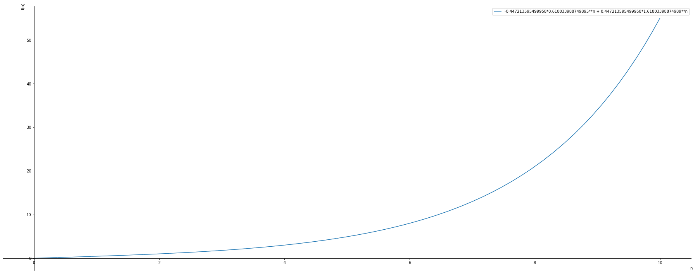
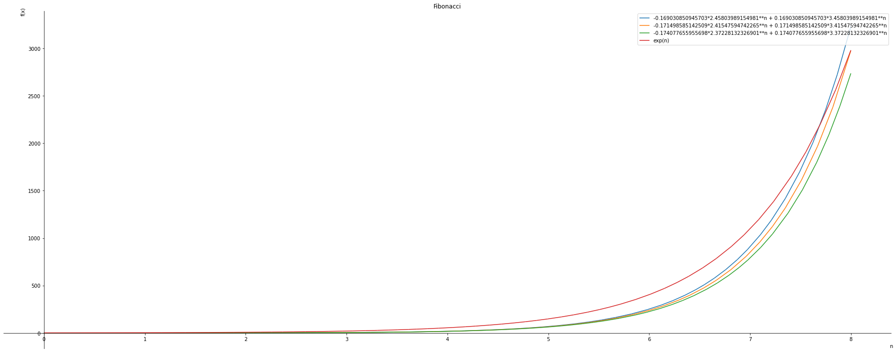
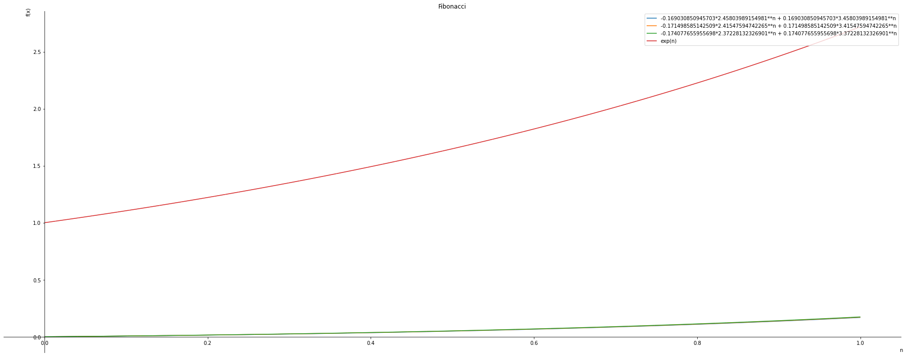
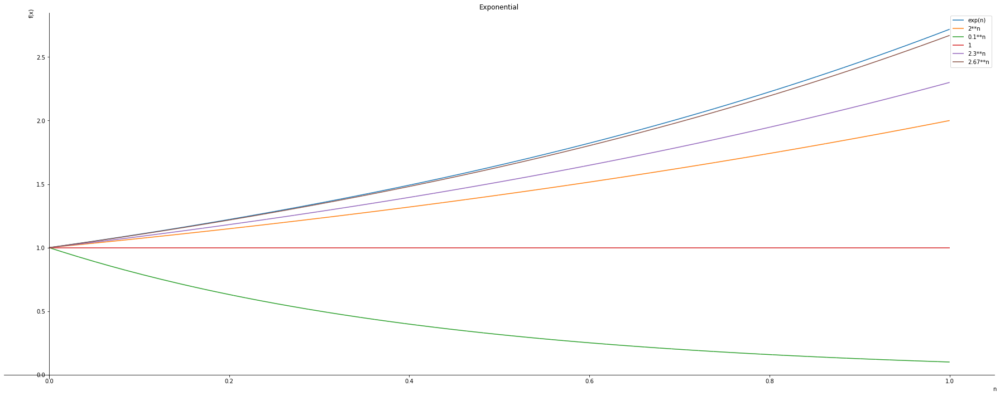
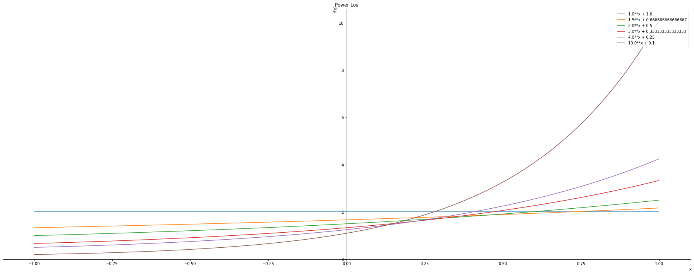

golden_ratio = (1 + 5**0.5 )/2
conjugate_golden_ratio = (1 - 5**0.5 )/2
print ("Golden Ratio :", golden_ratio)
print ("Conjugate Golden Ratio :", conjugate_golden_ratio)Golden Ratio : 1.618033988749895
Conjugate Golden Ratio : -0.6180339887498949
Plots and comparison to Exponential
In a series of Twitter posts by Matematician Tivadar Danka demonstrated the non recursive formula for the Fibonacci sequence.

I wanted to plot this equation and compare it with the exponential equation.
In the process I did some updates to the equation.
golden_ratio = (1 + 5**0.5 )/2
conjugate_golden_ratio = (1 - 5**0.5 )/2
print ("Golden Ratio :", golden_ratio)
print ("Conjugate Golden Ratio :", conjugate_golden_ratio)Golden Ratio : 1.618033988749895
Conjugate Golden Ratio : -0.6180339887498949n = sym.symbols('n')
fibonacci = (sym.Pow(golden_ratio, n) - sym.Pow(abs(conjugate_golden_ratio),n)) / (golden_ratio - conjugate_golden_ratio)
fibonacci
symplot.plot(fibonacci, (n,0,10), show=True, legend=True)
<sympy.plotting.plot.Plot at 0x7f8fa843c4f0>We generalize the Fibonnacci equation, by parametrizing the golden ratio and the conjugate of the golden ratio.
# Generalized Fibonacci Equation
g, n = sym.symbols('g, n')
golden_ratio = (1 + g**0.5 )/2
conjugate_golden_ratio = (1 - g**0.5 )/2
fibonacci = (sym.Pow(golden_ratio, n) - sym.Pow(abs(conjugate_golden_ratio),n)) / (golden_ratio - conjugate_golden_ratio)
fibonacciBased on the generalized fibonacci equation, we would like to find if we can can get an approximate of the exponential equation
#symplot.plot(fibonacci.subs(g, 4), (n,0,10), show=True, line_color='darkgreen')
graphs= sym.plotting.plot(fibonacci.subs(g, 35), fibonacci.subs(g, 34),fibonacci.subs(g, 33), sym.exp(n), (n,0,8), title="Fibonacci", legend= True, xlabel='n', ylabel='f(x)', show=False)
for i, graph in enumerate(graphs):
graph.line_color=color[i%len(color)]
graphs.show()
#symplot.plot(fibonacci.subs(g, 4), (n,0,10), show=True, line_color='darkgreen')
graphs= sym.plotting.plot(fibonacci.subs(g, 35), fibonacci.subs(g, 34),fibonacci.subs(g, 33), sym.exp(n), (n,0,1), title="Fibonacci", legend= True, xlabel='n', ylabel='f(x)', show=False)
for i, graph in enumerate(graphs):
graph.line_color=color[i%len(color)]
graphs.show()
Comparison with the Power equations.
\[ f(n) = constant^{n} \]
graphs= sym.plotting.plot(sym.exp(n), 2**n, 0.1**n,1**n,2.3**n,2.67**n,(n,0.0,1), title="Exponential", legend= True, xlabel='n', ylabel='f(x)', show=False)
for i, graph in enumerate(graphs):
graph.line_color=color[i%len(color)]
graphs.show()
\[ f(n) = constant^{n} + \frac{1}{constant} \]
n, x = sym.symbols('n, x')
loss = n**x + 1/n
#n hasto be grater than 1
graphs = sym.plotting.plot(loss.subs(n,1.),
loss.subs(n,1.5),
loss.subs(n,2.),
loss.subs(n,3.),
loss.subs(n,4.),
loss.subs(n,10.),
(x,-1,1), title="Power Los", legend= True, xlabel='x', ylabel='f(x)', show=False)
for i, graph in enumerate(graphs):
graph.line_color=color[i%len(color)]
graphs.show()